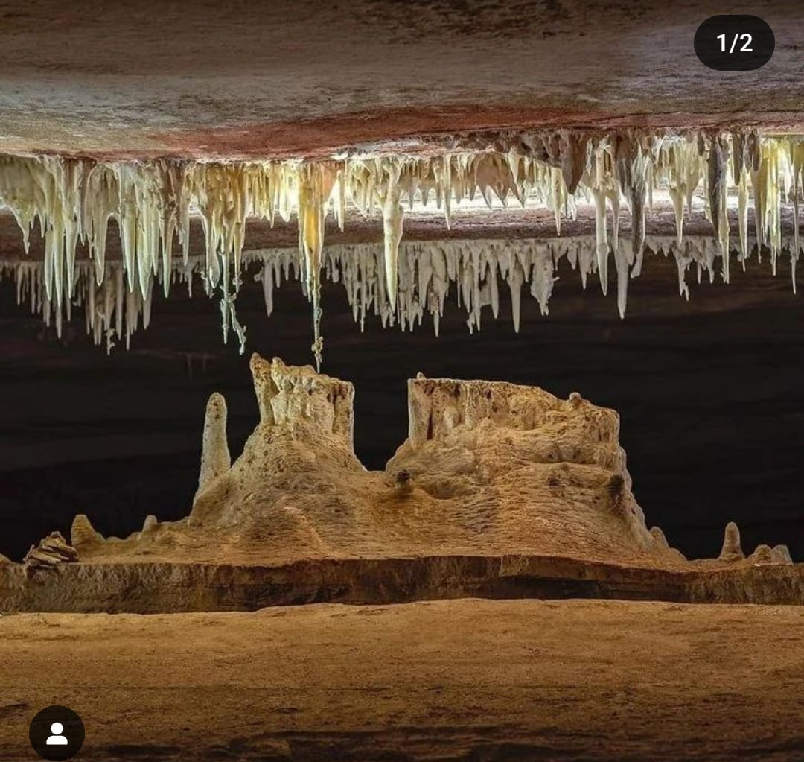

Roteiro do Capitão
O mais curto e antigo, com estalactites, estalagmites, colunas e cortinas. Descoberto pelo Capitão José de Fulor.
- Acesso a pé: cerca de 700 m
- Duração média: 1h
- Esforço: leve
Uma concentração rara de formações naturais, salões amplos e roteiros guiados que revelam por que a Torrinha é referência em espeleoturismo no Brasil.

Capacete, lanterna e orientação profissional em todos os roteiros.
Um percurso marcado por exploração antiga, uma descoberta decisiva em 1992 e o reconhecimento das formações raras que tornaram a caverna conhecida internacionalmente.
As formações abaixo aparecem como destaque principal do roteiro e ajudam a contar a identidade geológica do lugar.
Uma das maiores pétalas do mundo e a Terceira maior flor de aragonita já registrada, com presença marcante em salões de destaque.
Algumas peças chegam perto de 70 cm, o que coloca a caverna entre os locais mais notáveis para esse tipo de formação.
Estruturas que crescem em direções improváveis e criam um desenho quase escultórico em meio às galerias.
Além de estalactites, estalagmites, colunas, cortinas, cabelo de anjo e bolhas de calcita, o passeio inclui essa formação simbólica da Chapada.
Os roteiros abaixo foram organizados para apresentar clareza de acesso, duração e nível de esforço.
O mais curto e antigo, com estalactites, estalagmites, colunas e cortinas. Descoberto pelo Capitão José de Fulor.
Foco nas formações raras, como flores de aragonita, helictites e agulhas de gipsita.
Inclui a bolha de calcita com flor de aragonita dentro, o Salão dos Vulcões, helictite com flor na ponta e a réplica do Morro do Pai Inácio.
Reúne todos os roteiros anteriores e entrega a experiência mais ampla da Torrinha.
As informações abaixo ajudam a orientar o visitante antes da compra ou reserva do roteiro.
Os blocos abaixo funcionam como placeholders até entrarmos com fotos oficiais da Torrinha.
"Caverna Torrinha é um dos meus lugares prediletos, um lugar de paz, aconchego e leveza! Uma conexão incrível com a natureza."
Simone, Iraquara-BA
"Foi uma experiência maravilhosa conhecer a gruta da Torrinha, guia gentil, atencioso e paciente, com muito conhecimento sobre o local."
Ana Maria, Brasília-DF
"Em meio à escuridão total, com faroletes iluminando o caminho, senti como se estivesse realmente explorando as profundezas da Terra."
"A organização da visita foi ótima e o roteiro completo entrega muita informação sem ficar cansativo."
Visitante, Chapada Diamantina
Sim. O terreno irregular e as escadas podem limitar pessoas com mobilidade reduzida, e crianças devem estar acompanhadas de um adulto responsável.
A experiência é orientada por guia e a equipe é treinada para apoiar visitantes com claustrofobia. O conforto varia conforme o roteiro escolhido.
Recomendado levar apenas água, para preservar as formações e manter o percurso mais seguro.
Siga imediatamente as orientações do guia e da equipe local; as saídas de emergência são sinalizadas.
Sim, dependendo do roteiro e do tempo disponível, é possível combinar com outros atrativos da Chapada, como Lapa Doce e Pratinha.
Caverna Torrinha, zona rural de Iraquara, Chapada Diamantina, Bahia, a cerca de 64 km de Lençóis.
Endereço resumido: Caverna Torrinha, Iraquara - BA
Referências: 15 km do centro de Iraquara e 1 km da BA-122.
Estrutura: recepção, restaurante, cafeteria com vista para o paredão, pizzaria planejada e pousada em construção.
Distância de Lençóis: cerca de 64 km, o que facilita combinar com outros atrativos da Chapada Diamantina.
Os três arquivos abaixo ajudam a complementar o mapa com uma visão mais visual e explicativa da caverna.
Conteúdo de apresentação para contextualizar a visita e mostrar os principais pontos da Torrinha.
Registro visual do local para reforçar o que o visitante encontra no passeio e na paisagem da região.
Material adicional para ampliar a apresentação da Torrinha e incluir mais uma referência visual do local.
WhatsApp/telefone: (75) 99856-1666
Instagram: @cavernatorrinha_oficial
Atendimento: ideal para tirar dúvidas sobre roteiro, duração, grupos e melhor horário de visita.
Observação: as imagens exibidas são de fontes públicas externas sobre a Torrinha; se você quiser, eu posso trocar tudo por fotos enviadas por você ou pelo próprio Instagram oficial.